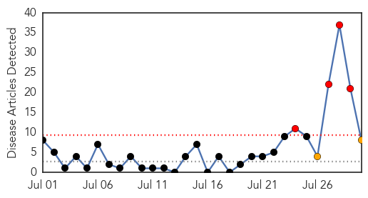
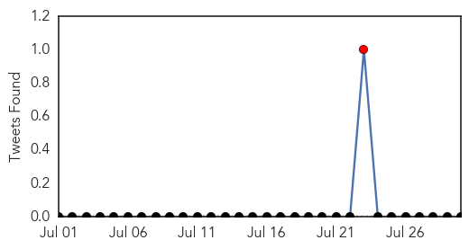
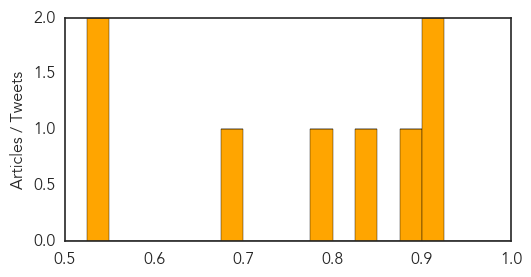
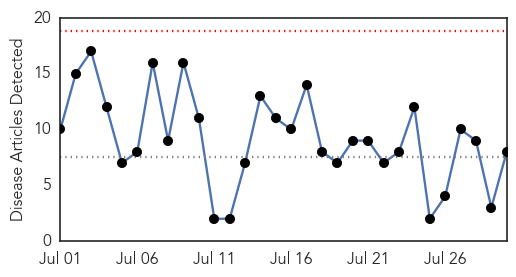

Hepatitis
30-Day Web Trend
4 alerts, 2 warnings

30-Day Twitter Trend
1 alerts, 0 warnings

Article Locations

Article Confidences
Top Articles:
- 0.923
- East African news, Headlines, Business, Tourism, Sports, Health, Entertainment, Education
- 0.901
- FG Expresses Worry over High Rate of Hepatitis, Articles
- 0.896
- Paras Hospitals, Gurgaon conducts educative talk sessions, screening camps and vaccinations to create awareness about Hepatitis
- 0.845
- Health Dept. cites protection offered by HPV immunization
- 0.782
- Negligence of ‘hepatitis could lead to cirrhosis, liver cancer’
- 0.676
- Yazigi: Health Ministry provides free-of-charge medicine for all contiguous diseases
- 0.527
- Pakistan sixth largest hepatitis-infected country: experts
- 0.526
- Doctor advocates inclusion of Hepatitis treatment in NHIS
Top Tweets:
-
No tweets found for Jul 30, 2015
Dengue Fever
30-Day Web Trend
0 alerts, 0 warnings

30-Day Twitter Trend
0 alerts, 0 warnings

Article Locations

Article Confidences

Top Articles:
- 0.996
- Update: Dengue Fever Outbreak declaration includes Samoa now
- 0.993
- Warning! Children At Risk – Severe Dengue Can Kill « Karen News
- 0.978
- Health dept fears outbreak of diseases in flood-hit areas
- 0.817
- Flood aftermath: Provinces start reporting disease outbreak
- 0.799
- Students learn how to avoid catching dengue
- 0.674
- 30-fold rise in dengue cases worldwide in last 50 years, says MoS Health Shripad Naik
- 0.615
- Health Dept fails to devise strategy to control dengue
- 0.562
- 30-fold rise in dengue cases worldwide in last 50 yrs: Naik
Top Tweets:
- 0.584
- Flavivirus news: A Dengue Fever Q&A - Pollstar: A Dengue Fever Q&APollstarFor the uninitiated, ... http://t.co/bl9S5LBY9d pathogenposse